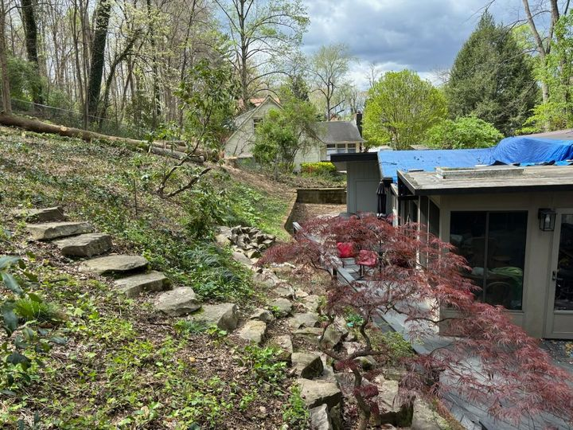
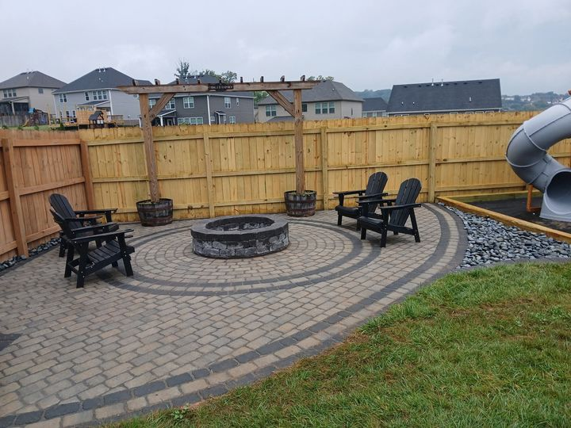
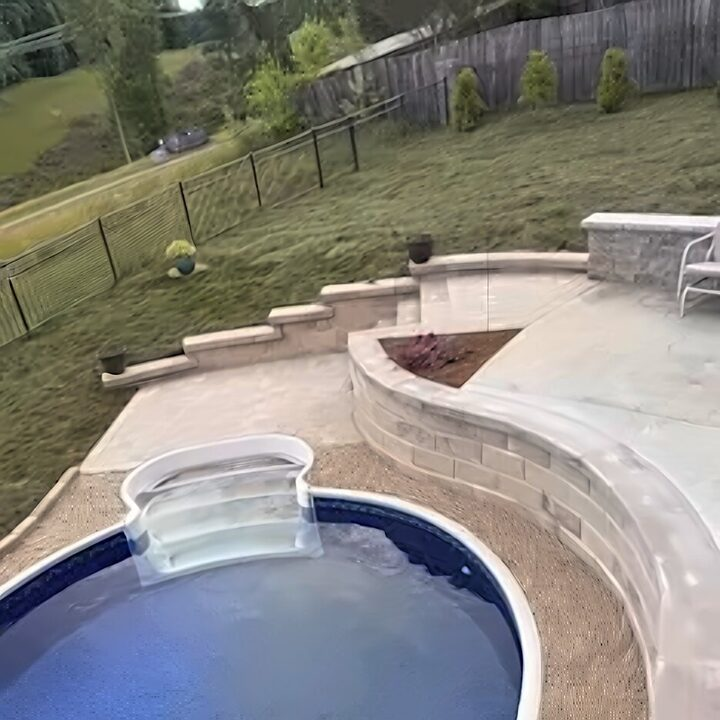

Hardscaping Services In Knoxville, TN
Hardscaping enhances enjoyment of outdoor space, adds value to the home, and is an extension of the living area. It can also help with practical needs like preventing erosion through retaining walls.
Families can spend time in their new outdoor spaces while eating, sitting around the fire, and making memories. The new hardscaping area can also add value to the overall real estate because it’s considered a permanent addition to the home, and so when appraisals are done, that gets factored in, and the home value can go up.
Our retaining walls solve problems like erosion, drainage issues, and can be a stabilizing factor for the property. And they also look great!
Our Hardscape Portfolio
Patios, fire pits, outdoor kitchens, retaining walls, walkways, waterfalls and water features — 40 recent projects from across East Tennessee. Tap any photo to view it full screen.
Waterfalls & Water Features
Recirculating waterfalls, streams and ponds finished in natural stone bring movement and the sound of falling water into your backyard.
Before & After
Drag the slider to see the transformation.

 BeforeAfter
BeforeAfter

BeforeAfterWhy Work With The Yard Force for Hardscaping Services?
We can deliver the results you are looking for. Here’s why.
Customer Needs First
Practical and Beautiful
An eye for precision
Satisfied Clients
Benefits of Hardscaping Services
There are many benefits to our hardscaping services. Sometimes it begins with meeting an urgent need, and sometimes it begins with desiring a new space.
Increased Property Value
New Space to Make Memories
Preserve the Property
How Does HardScaping Improve Your Property?
Here are a few ways that your Knoxville property will benefit from our hardscaping services.
Elegance
New Space, New Possibilities
Peace of Mind
Call today to learn more about our Tennessee hardscaping services!
Work With Us
Our process is simple. Just contact us to get started.
From there we will provide you with a free consultation and quote. Before long the job is done!
Tell Us About Your Project
Get a Custom Tailored Execution Plan and Estimate
Sit Back and Relax While We Transform Your Land
What Our Hardscapes Clients Say
A Retaining Wall Nobody Else Could Reach
“They just did everything they said, really well and timely. … And your guys were fantastic.”
Tom · Sequoyah Hills, KnoxvilleOld Bricks, New Front Yard
“There was poison ivy everywhere … and now it's absolutely beautiful.”
Sean · Fourth & Gill, Knoxville ★★★★★
★★★★★A Retaining Wall With Stairs, Better Than Expected
“The Yard Force came to my home to build a retaining wall with stairs. Communication was regular and clear. The work was done on and within the dates that we were told it would be. I was invited out to discuss progress and preferences throughout the build. The wall was built very well and details were better than I had expected. Mark and Clay were the main guys on site each day and they clearly knew what they were doing. I would recommend them any day.”
Tess McHone ★★★★★
★★★★★Just as We Imagined It Could Be
“My wife and I could not be more pleased with the completed project. It is just as we imagined it could be. Andy and his crew took the time and made the effort to surpass our expectations and to reflect the Yard Force Company's high standards. Adam, one of the owners, took the time to ensure that we were pleased with the compleyed project. My wife and I are grateful. Thank you guys!”
Oliver Lang ★★★★★
★★★★★My Backyard Looks Amazing
“JB and his crew were awesome. My backyard looks amazing. We are so happy and completely satisfied with their work. Will definitely reach out to them again when we are ready to redo our front yard.”
Phillip Garrett
★★★★★A Whole Backyard Project in a Week
“JB came out to give us a line by line quote for our entire backyard project, which included: retaining walls, small paver patio, steps, grading & sod, etc. Our entire project was completed within a week even with a day of rain. Andy & his crew did an excellent job. Andy communicated with us during the entire process. The Yard Force really can handle all your yard needs.”
Cat G ★★★★★
★★★★★A World-Class Volleyball Court
“The Yard Force rescued us! We needed experts to quickly renovate and repair our sand volleyball court with care and precision. We had three truckloads of sand and needed professional help. Clay and his team saved the day, and we have a world-class court now. They worked all day, stayed late, and made sure our project was completed.”
Seth HouserEstimate to Finished Product in Three Weeks
“Clay and crew were dependable from the moment the project started. We went from estimate to finished product in three weeks. They took our vision of the space and made it better than we could have imagined. Each and every person that was on the job site was beyond polite and respectful. We loved working with The Yard Force!”
Satisfied Client
Frequently Asked Questions About Hardscaping Services
Do you still have questions about hardscaping? Find out more below.
How much does a patio or hardscape project cost?
Patios range in size and complexity. Full patio installs start around $8,000. An average patio (about 500 sq ft) with a fire pit and seat wall and limited customization ranges from $18,000 to $32,000 or more. Larger patios with customized elements — water features, outdoor kitchens, shade structures and planter boxes — can range from $35,000 to $100,000 or more.
These are wide, ballpark ranges, not a quote. Multiple factors affect the final price, including density, terrain and grade, access points to the site, the scope of work, materials and location. For an in-depth quote, it’s best for us to come out and see the property in person, so we can make sure you’re not being overcharged.
Can a retaining wall solve my erosion issues?
Often times retaining walls can be a key factor in solving erosion issues on a property.
Why do people typically request hardscaping services?
Our customers typically request our hardscaping services to solve an erosion issue, expand their living space, or enhance the beauty of their property.
How does hardscaping raise the property value of my home?
- Curb Appeal
- A new hardscaping addition, even if it is outdoor, is factored into calculations
- Better erosion control equals higher property value
Schedule Hardscaping Services With The Yard Force Today
The Yard Force offers expert hardscaping services in the Knoxville area.
Call The Yard Force at (865) 290-8815 today and GET A FREE QUOTE!
Request a Hardscape Quote
Tell us about your property and project. This request goes straight to our hardscape team, and we'll follow up to schedule a free on-site visit.